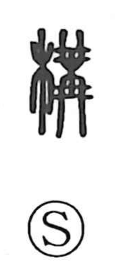

構

Kun: kamaeru, kamau | On: kou
to build ・ to construct ・ to put together ・ to combine ・ to contrive
Explanation
構 joins 木, wood, with 冓 as its phonetic. 冓 represents braided cords tied together, a symbolic formation associated with a marriage joining. It contributes the idea of combining or fitting things into a connected arrangement.
With 木, the combination becomes the fitting of timbers into a framework. The older definition concerns covering or building a roof: separate wooden members are assembled into a structure.
The action then extends to constructing anything from related parts, setting something up, and organizing a whole. A plan can likewise be assembled in the mind or deliberately put into action. 構 therefore includes building, composing, preparing, and contriving, with the wooden framework as its concrete application.